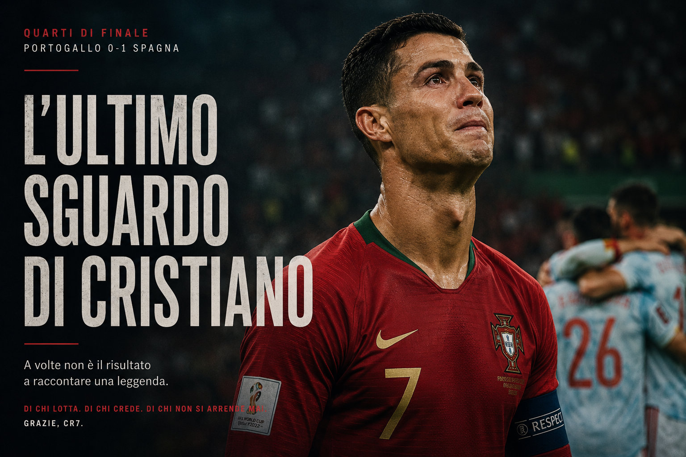

Risultati e letture aggiornate
Esito, mercati gol, tiri, corner e gerarchia ammoniti. Apri la partita per leggere l'analisi completa.

Partite da giocare
Anteprime, probabili formazioni, condizioni ambientali e chiavi tattiche.
Da giocare — ottavi di finale
 ArgentinaVS
ArgentinaVS Egitto
EgittoArgentina - Egitto
L’Argentina parte nettamente favorita per controllo e volume offensivo, ma dovrà proteggere le avanzate dei terzini dalle ripartenze di Salah e Marmoush. Il caldo di Kansas City può premiare una gestione paziente più di una goleada.
Apri anteprima, scenari e MyCombo SvizzeraVS
SvizzeraVS Colombia
ColombiaSvizzera - Colombia
La struttura svizzera sfida la creatività di James Rodríguez e le accelerazioni di Luis Díaz. La Colombia ha qualcosa in più negli uno contro uno, ma ritmo basso, piazzati e seconde palle possono trascinare la gara fino all’ultimo episodio.
Apri anteprima, scenari e MyComboDa giocare — quarti di finale
 FranciaVS
FranciaVS Marocco
MaroccoFrancia - Marocco
La Francia arriva al quarto con maggiore profondità e talento individuale; il Marocco può però comprimere gli spazi, abbassare il ritmo e trasformare la partita in una battaglia di dettagli. Il primo gol avrà un peso enorme.
Apri anteprima, scenari e MyComboPartite concluse
Risultato finale e verifica del pronostico pubblicato.
Concluse - 7 luglio
 USA
1-4
USA
1-4
 Belgio
Belgio
De Ketelaere trascina il Belgio: USA eliminati
De Ketelaere firma una doppietta, Vanaken e Lukaku completano il poker belga; Tillman segna per gli Stati Uniti. Saltano 1X, USA qualificati, Under 3,5 e No Goal.
Leggi risultato e verifica del pronosticoConcluse - 6 luglio
 Portogallo
0-1
Portogallo
0-1
 Spagna
Spagna
Merino elimina il Portogallo: Spagna ai quarti
Centrati Spagna qualificata e Under 3,5. Persi Goal e Over 1,5; il Portogallo esce agli ottavi.
Leggi risultato e verifica del pronostico Messico
2-3
Inghilterra
Messico
2-3
Inghilterra
Bellingham e Kane portano l’Inghilterra ai quarti
Centrati X2, Goal e Inghilterra qualificata. Persi pareggio, Under 2,5 e Under 3,5; Balanced e Aggressive saltano sul segno 1X.
Leggi risultato e verifica del pronosticoConcluse - 5 luglio
 Brasile
1-2
Brasile
1-2
 Norvegia
Norvegia
Haaland elimina il Brasile con una doppietta
Centrati Goal, Over 1,5, Over 2,5 e Under 3,5. Tutte le MyCombo sono perse per Brasile qualificato o vincente.
Leggi risultato e verifica del pronosticoConcluse - 4 luglio
 Canada
0-3
Marocco
Canada
0-3
Marocco
Ounahi e Rahimi portano il Marocco ai quarti
Centrati Marocco qualificato e Under 3,5. Persi risultato centrale 0-1 e Under 2,5.
Leggi risultato e verifica del pronostico Paraguay
0-1
Francia
Paraguay
0-1
Francia
Mbappé decide su rigore: Francia ai quarti
Centrati Francia vincente, Francia qualificata e Under 3,5. Persi risultato centrale 0-2 e Over 1,5.
Leggi risultato e verifica del pronosticoColombia
1-0
 Ghana
Ghana
Colombia agli ottavi con una vittoria di misura
Centrati Colombia vincente, Colombia + Under 4,5, No Goal, Under 3,5 e il risultato alternativo 1-0.
Leggi risultato e verifica del pronosticoArgentina
3-2
 Capo Verde
Capo Verde
Argentina agli ottavi, Capo Verde segna due volte
Centrati Argentina vincente, Argentina + Over 1,5 e Over 2,5. Persi risultato esatto, No Goal, Under 3,5 e Under 4,5.
Leggi risultato e verifica del pronosticoConcluse - 3 luglio
 Australia
1-1
Egitto
Australia
1-1
Egitto
Egitto agli ottavi dopo i rigori
1-1 dopo i supplementari e 4-2 Egitto ai rigori. Centrati X2, Under 2,5 e il risultato alternativo 1-1; persi segno 2 e No Goal.
Leggi risultato e verifica del pronosticoPortogallo
2-1
 Croazia
Croazia
Rimonta Portogallo: Ronaldo e Ramos ribaltano Perišić
Centrati Portogallo vincente/Draw No Bet e Under 3,5. Persi Under 2,5, No Goal e Under 9,5 corner.
Leggi risultato e verifica del pronosticoSvizzera
2-0
 Algeria
Algeria
Embolo e Ndoye: Svizzera agli ottavi senza subire gol
Centrati Svizzera vincente/1X/DNB e Under 3,5. Persi Goal e Over 8,5 corner.
Leggi risultato e verifica del pronosticoConcluse - 2 luglio
Spagna
3-0
 Austria
Austria
Spagna dominante: centrati vincente, No Goal e mercati Under
Oyarzabal firma una doppietta, Pedro Porro completa il 3-0. Centrati Spagna + Under 4,5, No Goal, Under 3,5 e Over 8,5 corner.
Leggi risultato e verifica del pronosticoStati Uniti
2-0
 Bosnia-Erzegovina
Bosnia-Erzegovina
Codex centra il risultato esatto: USA agli ottavi
Balogun segna al 45' e viene espulso al 64'; Tillman firma il 2-0 su punizione. Centrati USA + Under 4,5, No Goal e risultato esatto.
Leggi risultato e verifica del pronosticoConcluse - 1 luglio
Belgio
3-2
 Senegal
Senegal
Il Belgio rimonta e passa al 120+5'
2-2 al 90', poi rigore decisivo di Tielemans. MyCombo: Safe 4/6, Balanced 4/5 e Aggressive 6/7; centrati Goal e volumi di tiro, mancato l'Over 7,5 corner.
Leggi risultato, analisi e MyComboKane firma la rimonta e porta l'Inghilterra agli ottavi
Risultato finale: 2-1 Inghilterra. Aggressive centrata 6/6; Safe 4/5 e Balanced 5/6 saltano soltanto sull'Over 17,5 tiri inglesi: 16 effettivi.
Leggi risultato, analisi e MyComboMessico
2-0
 Ecuador
Ecuador
Messico agli ottavi con una vittoria netta
Risultato finale: 2-0 Messico. Centrati doppia chance 1X, Over 8,5 corner e Over 11,5 tiri del Messico.
Leggi risultato, analisi e MyComboConcluse - 30 giugno
Francia
3-0
 Svezia
Svezia
Francia agli ottavi dopo una prova dominante
Risultato finale: 3-0 Francia, con 25 tiri, 12 conclusioni nello specchio e 9 corner. Centrati passaggio del turno e No Goal.
Leggi risultato, analisi e MyCombo Costa d'Avorio
1-2
Norvegia
Costa d'Avorio
1-2
Norvegia
Norvegia agli ottavi con Nusa e Haaland
Centrati risultato esatto, Goal, Over 2,5 e Over 8,5 corner. Balanced e Aggressive chiudono 4/5, perse per il volume tiri norvegese.
Leggi risultato, analisi e MyCombo Olanda
1-1
Marocco
Olanda
1-1
Marocco
Marocco agli ottavi dopo i rigori
1-1 dopo 120 minuti e 3-2 Marocco ai rigori. Centrati risultato esatto, Under 2,5 e Goal; non preso il passaggio del turno dell'Olanda.
Leggi risultato e verifica dei pronostici Germania
1-1
Paraguay
Germania
1-1
Paraguay
Paraguay agli ottavi dopo i rigori
1-1 dopo 120 minuti, con gol di Enciso e Havertz. Il Paraguay vince 4-3 ai rigori ed elimina la Germania.
Leggi risultato, analisi e MyComboConcluse - 29 giugno
Brasile
2-1
 Giappone
Giappone
Brasile qualificato con una rimonta completata nel recupero
Risultato finale: 2-1 Brasile. Centrati risultato esatto, passaggio del turno, Goal, corner e volumi di tiro delle MyCombo.
Leggi risultato, analisi e MyComboConcluse - 28 giugno
 Sudafrica
0-1
Canada
Sudafrica
0-1
Canada
Canada superiore nel volume, Sudafrica pericoloso con nulla da perdere
Risultato finale: 0-1 Canada. Pronostici centrati: Under 2,5, No Goal e Canada vincente.
Leggi risultato e analisi completa Panama
0-2
Inghilterra
Panama
0-2
Inghilterra
Panama deve aprirsi, l'Inghilterra può colpire con tutto il fronte offensivo
Pronostico centrale: 0-3 Inghilterra. Giocate principali: Inghilterra + Over 2,5, No Goal e Inghilterra più corner.
Leggi analisi completaCroazia
2-1
Ghana
Croazia obbligata a vincere, Ghana protetto dal pareggio
Pronostico centrale: 1-0 Croazia. Giocate principali: Under 2,5, No Goal e Croazia più corner.
Leggi analisi completaColombia
0-0
Portogallo
Colombia in transizione, Portogallo con più volume offensivo
Pronostico centrale: 1-2 Portogallo. Giocate principali: Goal, X2 e Ronaldo 3+ tiri.
Leggi analisi completa Uzbekistan
Uzbekistan
RD Congo più fisica, Uzbekistan obbligato a scoprirsi
Pronostico centrale: 1-0 RD Congo. Giocate principali: Under 2,5, No Goal e Wissa 2+ tiri.
Leggi analisi completa Giordania
1-3
Argentina
Giordania
1-3
Argentina
Turnover argentino e ritmo basso: decide un episodio
Pronostico centrale: 0-1 Argentina. Giocate principali: Under 2,5, No Goal e Álvarez 2+ tiri.
Leggi analisi completaAlgeria
3-3
Austria
Pareggio pesante, Austria leggermente avanti nella struttura
Pronostico centrale: 0-1 Austria. Giocate principali: Under 2,5, X2 e Arnautovic 2+ tiri.
Leggi analisi completaConcluse - 27 giugno
 Uruguay
0-1
Spagna
Uruguay
0-1
Spagna
Baena porta la Spagna alla vittoria
Centrati 0-1 Spagna, Under 2,5 e No Goal.
Leggi analisi e verificaCapo Verde
0-0
 Arabia Saudita
Arabia Saudita
Equilibrio totale e nessun gol
Centrato il pareggio; non presi risultato esatto 1-1 e Goal.
Leggi analisi e verificaEgitto
1-1
 Iran
Iran
Saber e Rezaeian firmano il pareggio
Centrato Under 2,5; non presi vittoria egiziana e No Goal.
Leggi analisi e verifica Nuova Zelanda
1-5
Belgio
Nuova Zelanda
1-5
Belgio
Il Belgio dilaga e vince il gruppo
Centrati Belgio vincente, Over 2,5 e Goal.
Leggi analisi e verificaConcluse - piu recenti
Senegal
5-0
 Iraq
Iraq
Il Senegal dilaga e conferma la lettura
Presi Senegal vincente, No Goal e Over 2,5; mancato soltanto il risultato esatto 3-0.
Leggi analisi e verificaNorvegia
1-4
Francia
Francia dominante, centrati segno e mercati gol
Presi Francia vincente, Over 2,5, Francia segna e Goal; risultato esatto sfiorato.
Leggi analisi e verifica Turchia
3-2
USA
Turchia
3-2
USA
La Turchia vince una partita aperta e ribalta la lettura
Risultato reale 3-2: sbagliati segno 2 e risultato centrale 1-2. Confermata soltanto la direzione da partita aperta e ricca di occasioni.
Leggi analisi e verificaParaguay
0-0
Australia
Australia produce di piu, ma il pari resta senza gol
Preso il pareggio come scenario utile; sbagliato il risultato centrale 1-1 e la presenza di almeno un gol per parte.
Leggi analisi e verifica Tunisia
1-3
Olanda
Tunisia
1-3
Olanda
Olanda vince e supera la linea Over, Tunisia trova il gol
Presi segno 2 e Over 2,5; sbagliato il risultato centrale 0-3 e la lettura No Goal.
Leggi analisi e verificaGiappone
1-1
Svezia
Maeda illude il Giappone, Elanga rimette dentro la Svezia
Presi Goal, Over 1,5 e scenario alternativo 1-1; sbagliati Giappone vincente e risultato centrale 2-1.
Leggi analisi e verifica Curacao
0-2
Costa d'Avorio
Curacao
0-2
Costa d'Avorio
Pepe firma la doppietta e conferma la lettura
Presi risultato esatto, Costa d'Avorio vincente, No Goal e Multigol 1-3.
Leggi analisi e verificaEcuador
2-1
Germania
Ecuador ribalta la Germania gia qualificata
Presi Goal e Multigol 2-4; sbagliati segno 2, risultato centrale e primo ammonito.
Leggi analisi e verificaBosnia-Erzegovina
3-1
Qatar
Bosnia vince e conferma la lettura principale
Presi Bosnia vincente, Over 1,5 e Multigol 2-4; il 2-1 centrale diventa 3-1.
Leggi analisi e verificaSvizzera
2-1
Canada
La Svizzera passa in una gara equilibrata
Presi Goal e Under 3,5; il pareggio centrale viene superato dal 2-1 svizzero.
Leggi analisi e verifica Scozia
0-3
Brasile
Scozia
0-3
Brasile
Brasile netto, Scozia senza gol
Presi Brasile vincente, No Goal, Under 4,5 e Multigol 2-4; mancato solo il 0-2 esatto.
Leggi analisi e verificaMarocco
4-2
 Haiti
Haiti
Marocco vince, ma Haiti rompe il No Goal
Preso il segno Marocco; sbagliati No Goal e risultato, partita molto piu aperta del previsto.
Leggi analisi e verificaMessico
Messico piu largo, ma direzione presa
Presi X2, Messico vincente, Over 1,5 e Multigol 2-4; sbagliato il Goal.
Leggi analisi e verificaSudafrica
1-0
 Corea del Sud
Corea del Sud
Sudafrica ribalta la lettura: Corea spenta
Sbagliati X2, Over 1,5 e risultato; il Sudafrica conferma fisicita e regge dietro.
Leggi analisi e verificaColombia
1-0
DR Congo
Munoz decide la partita-trappola
Presi Colombia vincente, No Goal, Under 3,5 e Multigol 1-3; il 2-0 centrale resta largo.
Leggi analisi e verificaPanama
0-1
Croazia
Budimir basta alla Croazia
Presi Croazia vincente, Under 3,5, Multigol 1-3 e centralita di Budimir.
Leggi analisi e verificaGhana
Il Ghana spegne l'Inghilterra
Presi No Goal e Under 4,5; sbagliati Inghilterra vincente, Multigol 2-4 e risultato 2-0.
Leggi analisi e verificaPortogallo
5-0
Uzbekistan
Portogallo largo oltre la linea prudente
Presi Portogallo vincente e No Goal; saltano Under 4,5, Multigol 2-4 e risultato 2-0.
Leggi analisi e verificaGiordania
1-2
Algeria
Benbouali e Gouiri firmano la rimonta prevista
Presi risultato esatto, Algeria vincente, Goal e Multigol 2-4.
Leggi analisi e verificaNorvegia
3-2
Senegal
Pedersen e la doppietta di Haaland qualificano la Norvegia
Presi Norvegia vincente, Goal e Over 2,5; primo ammonito ancora da verificare.
Leggi analisi e verificaFrancia
3-0
Iraq
Mbappe e Dembele producono il 3-0 previsto
Presi risultato esatto, Francia vincente, No Goal e Multigol 3-5.
Leggi analisi e verificaArgentina
2-0
Austria
Messi firma il 2-0 previsto dopo un rigore sbagliato
Presi risultato esatto, vincente, No Goal, Under 3,5, Multigol 2-4 e Messi 2+ tiri.
Leggi analisi e verificaSpagna
4-0
Arabia Saudita
La Spagna ritrova gol ed efficienza
Pino, Zubimendi e la doppietta di Yamal firmano il netto 4-0.
Leggi l'analisiBelgio
0-0
Iran
Beiranvand ferma il Belgio: secondo pareggio consecutivo
Presi Under 3,5 e No Goal; Belgio vincente e 2-0 smentiti.
Leggi l'analisiUruguay
2-2
Capo Verde
Capo Verde sorprende ancora e rimonta due volte l'Uruguay
La partita smentisce la lettura Under: quattro gol e secondo punto storico per Capo Verde.
Leggi l'analisiNuova Zelanda
1-3
Egitto
L'Egitto rimonta e prende la testa del Gruppo G
Presi Egitto vincente, Goal e Multigol 2-4; Salah ancora decisivo.
Leggi l'analisiConcluse - precedenti
Tunisia
0-4
Giappone
Giappone dominante, Ueda firma una doppietta
Presi vincente, No Goal, Ueda in porta e Giappone piu corner.
Leggi analisi e verificaEcuador
0-0
Curacao
Room ferma un Ecuador dominante
27 tiri e 15 nello specchio non bastano; presi No Goal, corner e cartellini.
Leggi analisi e verificaGermania
2-1
Costa d'Avorio
Undav ribalta Kessie nel recupero
Presi vincente Germania, Under 3,5, Multigol 2-4 e piu corner.
Leggi analisi e verificaOlanda
5-1
Svezia
Olanda devastante nella finalizzazione
Presi vincente, Goal e Over 2,5; sottostimato lo scarto finale.
Leggi analisi e verificaUSA
2-0
Australia
USA solidi, Australia senza gol
Presi vincente, No Goal, corner USA e Australia piu ammonita.
Leggi l'analisiTurchia
0-1
Paraguay
Turchia favorita, Barton alza i cartellini
La Turchia domina 32-7 nei tiri, ma Galarza decide al 2'.
Leggi l'analisiBrasile
3-0
Haiti
Brasile, volume e pressione continua
Vittoria larga, 18-23 tiri e forte vantaggio nei corner.
Leggi l'analisiScozia
0-1
Marocco
Il Marocco prova a controllarla
Under 2,5, Marocco piu corner e Bouaddi primo ammonito.
Leggi l'analisi